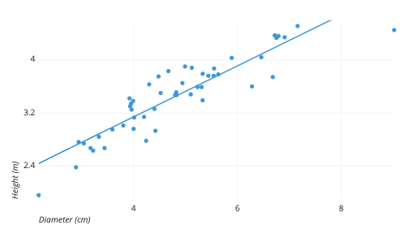
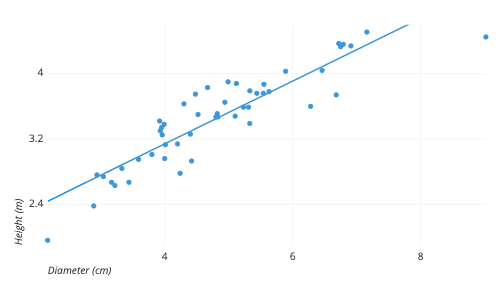
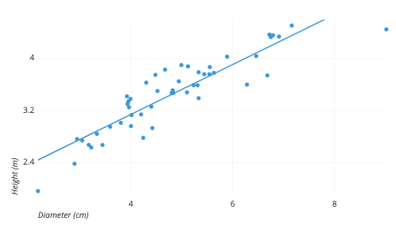

The design process for this interactive chart was very straightforward. I first had to find a suitable dataset, with trustworthy data. I was able to combine two datasets from ESPN (Entertainment and Sports Programming Network). ESPN is the world leader in all sports statistics, which makes them a reputable source for my data. The two datasets I combined were a salary dataset and a player statistics dataset. Once I had the dataset cleaned and prepared, I was able to start on the data visualization. I first had to understand the data and figure out what I wanted to show. I decided on showing an average of player salary, based on position. I knew there were 5 positions, and I thought a bar chart is best suited for my visualization. A bar chart is a great way to show comparisons between multiple categories. I originally had ideas to make either an interactive pie chart or scatterplot, however, neither of them were good options because for what variables I wanted to display.

Once I decided on a bar chart, I had to make the visualization in D3, and make it interactive. Once I was able to make the visualization, I used an .on(‘mouseover’) function to change the opacity of the bar, as well as provide the salary averages and number of players, for each position. The reason for the opacity change was to give contrast between the bar color and the color of the text. I chose to make the bar blue and text black. The opacity change made the text stand out from the color of the bar.
The next form of interaction I included was a radar chart. I executed this by including an .on(‘click) function on the bars of the bar chart. When the user clicks a bar for any position, it will redirect them to a separate .html page where I include an interactive radar chart. The user is given a prompt where they can edit the data for the radar chart. I implemented this idea because basketball statistics change with each game played. This will allow the user to include updated statistics, rather than be limited by what was included in my .csv file.
Once the user is happy with the data being presented, they click a button, which draws the radar chart. This radar chart includes all 5 positions. They are color coded, with colors purple, red, orange, green, and blue. I also decide to lower the opacity of these colors to allow the user to view all 5 charts at once. This allows the user to compare stats between the positions. I chose the radar chart for this visualization because it gave me the best way to show 5 different player stats for 5 different positions.
Overall, I believe these visualizations were a success. I was able to discover new facts from the data, that I may have not easily seen from just the .csv file format. The use of the interactive bar chart and radar chart allow me to compare stats based on position, which can help me understand how each position is different, and how they are each unique and valuable.
*Check out the Tutorial page for a Live Demo of the Website!